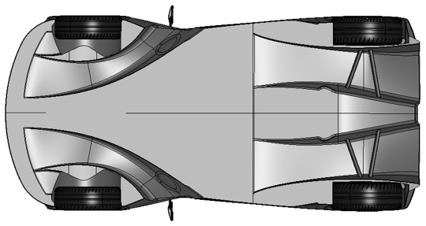

A new class of track car
Elemental Cars are an advanced track car manufacturer about to start producing, in June 2016, their stunning new product the RP1, weighing in at just 540 kilogrammes with 320 bhp delivering mind-boggling performance (0-60 mph in 2.8 seconds). More impressively it does this as a road-legal vehicle with room for a passenger and storage space for the shopping! However, one problem you have with such prodigious power in such a light chassis is matching the cornering performance to the stunning sraightline experience by producing enough grip to get around those gorgeous bends and sweeping curves. Elemental, of course, opted for the most elegant light-weight solution for this on the RP1 - aerodynamic downforce.
When London Computational Solutions (LCS) first heard from Elemental, they asked for a Computational Fluid Dynamics (CFD) analysis of their current car with a view to understanding their car better, so they could refine its aerodynamic balance. Our first milestone was to demonstrate that our CFD modelling matched their wind tunnel data and track results. Once we had satisfied their healthy engineering scepticism of simulation technology, which complies with our philosophy that the first step in exploiting numerical techniques is to prove their engineering accuracy, we moved onto the main topic of the project - more performance.
Getting more grip
picture of friction. Heavier (bigger tyres (more weight which would blunt accelaertation, packaging, bigger wheels unsprung weight (no no from the vehicle dynamicists) At grip limit Ftr=F. so if we increase Ftr we can increase F (the centripetal force of the car, by going FASTer)
How the elemental car works
picture of under floor with red arrows and expllanaton of how it works

More Downforce please
After a detailed debrief from the vehicle dynamicist and trackside aerodynamics consultant, establishing that the LCS CFD results matched the behaviour of the car on track, Elemental explained they felt they would like to move the aerodynamic balance rearwards by about 5%. I explained there were two ways of doing this, the first being to back off the front downforce and the second being to increase the rear downforce. The immediate emphatic response from Messieurs Begley, Fowler and Kent (the Elemental engineering directors) was "MORE DOWNFORCE PLEASE!". This invoked a strong burst of nostalgia in my mind, reminding me of the last time I had with worked with John, Mark and Peter - in 2007 at McLaren F1 winning 8 World Championship races in the season. An achievement based on a relentless drive for more downforce. Bear in mind the Elemental RP1 already has more than twice the downforce of any of its' competitors, but this is how you stay ahead - MORE MORE MORE!
An aerodynamic car floor...
The brief was now clear and LCS set off to deliver the customer's requirement. But then came further instructions from Elemental, no appendages were permitted (no wings sticking out!) and their packaging of the 320 bhp 2.0 litre turbo and 6 speed sequential gearbox must be respected. Very much like my F1 days a difficult aerodynamic challenge with tight geometric constraints. Then came the next inevitable F1 analogy - "Mark, could you get this done in a couple of weeks - we need to charge up the Goodwood Hill at the Festival of Speed next month so we need some answers quickly". And this fits perfectly with the LCS-FAST philosophy. Our passion is for doing things FAST, in engineering you build on what you did yesterday so if you get more done today the better tomorrow will be. So we work FAST.
....and a faster car
LCS then redesigned the rear half of the floor to surpass Elementals' targets delivering 15% more downforce and a greater than 5% shift in aerodynamic balance rearward and met the Elemental deadline. Thus the RP1 retains its stunning turn-in capabilities but now with better stability on corner entry and even more traction on exit. This will give the RP1 >> 400 kg of downforce at 150 mph! You can see the car go FAST up the hill at the Festival of Speed and meet the Elemental team there or see the Elemental website for more details. And as you might expect Elemental are not resting on their laurels, they are still asking for MORE so watch this space.....
Mark T.